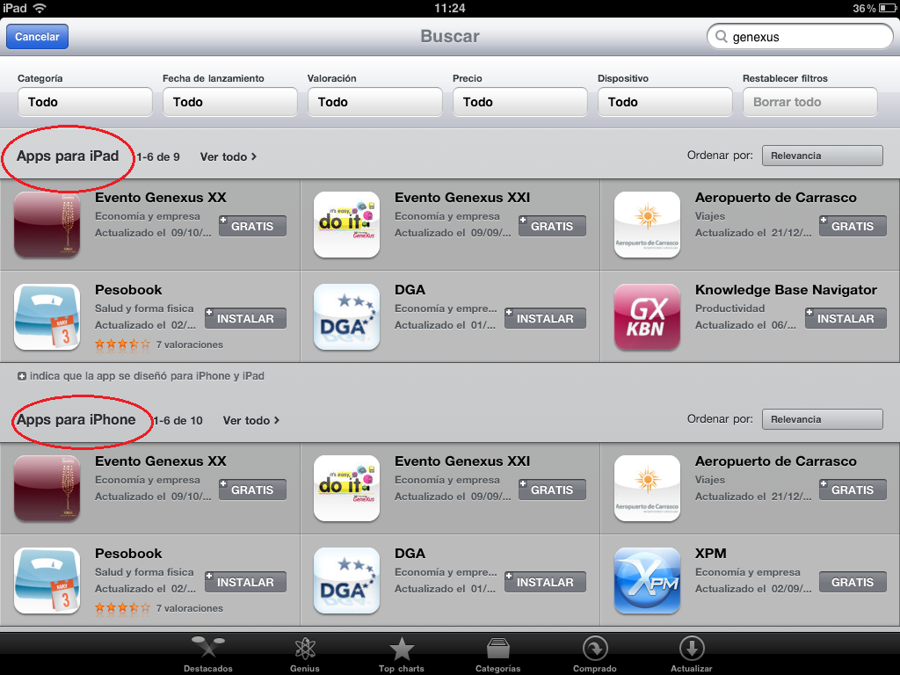

To specify the target device of the iOS application. Values
DescriptionThis property indicates wich device your application was made for. For example, if you have done the design for iPad, but not for iPhone, you will have to set the property on iPad value, then, your application will be available just for iPad. In the AppStore you will see the application on the correct category:  In iTunes: However, it is possible to install an iPhone application on an iPad, but you will see something like this: ScopeObjects Smart Devices Main Objects (iOS) See AlsoNative Mobile Main object properties
|
| Backlinks | ||
| Getting Started with tvOS | Getting Started with watchOS | Native Mobile Main object properties |